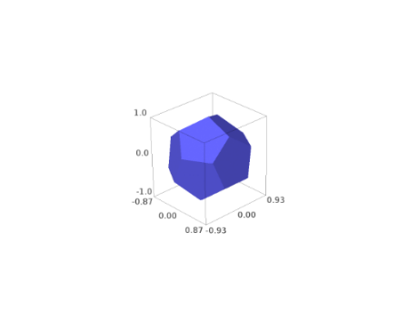

A 3D cube centered at the origin with default side lengths 1.
INPUT:
center – (default: (0,0,0))
size – (default: 1) the side lengths of the
cube
color – a string that describes a color; this
can also be a list of 3-tuples or strings length 6 or 3, in which
case the faces (and oppositive faces) are colored.
frame_thickness – (default: 0) if positive,
then thickness of the frame
frame_color – (default: None) if given, gives
the color of the frame
opacity – (default: 1) if less than 1 then it’s
transparent
color – a string that describes a color; this
can also be a list of 3-tuples or strings length 6 or 3, in which
case the faces (and oppositive faces) are colored.
opacity – (default: 1) if less than 1 then is transparent
EXAMPLES: A plain Dodecahedron:
sage: dodecahedron()Graphics3d Object

A translucent dodecahedron that contains a black sphere:
CONSTRUCTION: This is how we construct a dodecahedron. We let one
point be \(Q = (0,1,0)\).
Now there are three points spaced equally on a circle around the
north pole. The other requirement is that the angle between them be
the angle of a pentagon, namely \(3\pi/5\). This is enough to
determine them. Placing one on the \(xz\)-plane we have.
Solving
\(\frac{(P_1-Q) \cdot (P_2-Q)}{|P_1-Q||P_2-Q|} = \cos(3\pi/5)\)
we get \(t = 2/3\).
Now we have 6 points \(R_1, ..., R_6\) to close the three
top pentagons. These can be found by mirroring \(P_2\) and
\(P_3\) by the \(yz\)-plane and rotating around the
\(y\)-axis by the angle \(\theta\) from \(Q\) to
\(P_1\). Note that \(\cos(\theta) = t = 2/3\) and so
\(\sin(\theta) = \sqrt{5}/3\). Rotation gives us the other
four.
Now we reflect through the origin for the bottom half.
color – a string that describes a color; this
can also be a list of 3-tuples or strings length 6 or 3, in which
case the faces (and oppositive faces) are colored.
opacity – (default: 1) if less than 1 then is transparent
EXAMPLES:
sage: icosahedron()Graphics3d Object
Two icosahedra at different positions of different sizes.
color – a string that describes a color; this
can also be a list of 3-tuples or strings length 6 or 3, in which
case the faces (and oppositive faces) are colored.
opacity – (default: 1) if less than 1 then is
transparent